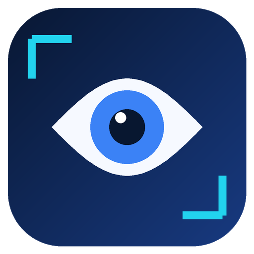
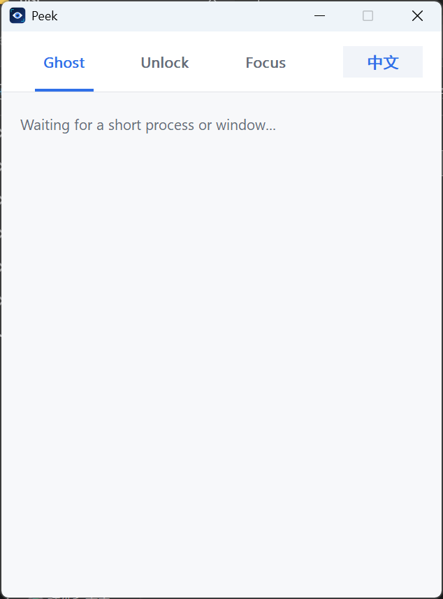
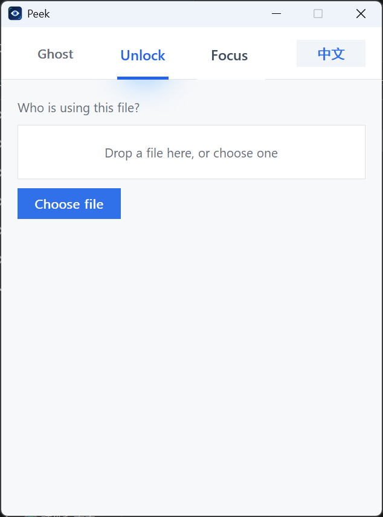
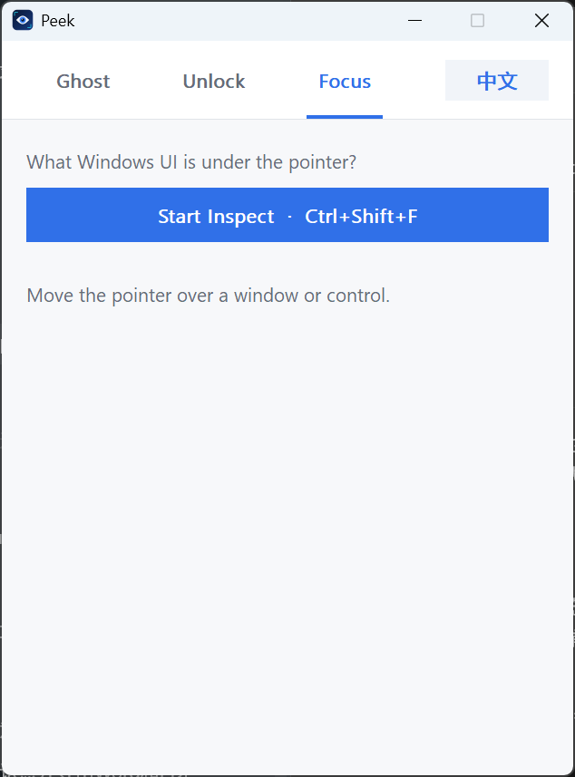

01
Ghost
What just flashed past?
Keeps the latest short-lived process and top-level window events in memory, including lifetime, path, command line, and parent process when Windows makes them available.
Ctrl + Shift + G
PeekNATIVE WINDOWS UTILITY
Find what flashed past, who locked a file, and which Windows UI is under the pointer.
UPCOMING ON Product HuntWindows 10/11 · x64 · Portable · No account · No telemetry

REAL WORKFLOW
THREE FOCUSED TOOLS
What just flashed past?
Keeps the latest short-lived process and top-level window events in memory, including lifetime, path, command line, and parent process when Windows makes them available.
Ctrl + Shift + GWho is using this file?
Drop a file or choose one. Peek uses Windows Restart Manager to identify likely owners and lets you reveal the executable or end the process after confirmation.

What Windows UI is under the pointer?
Highlight a window or control and read its HWND, process, class, title, rectangle, and available UI Automation properties.
Ctrl + Shift + F
SMALL BY DESIGN
Download the portable Windows x64 release.